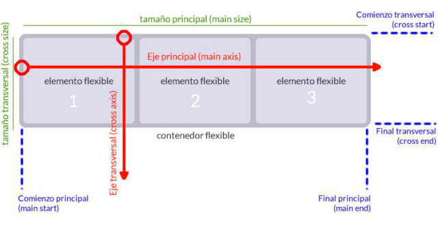

Estilos comunes para los ejemplos
Para los ejemplos, vamos a usar 6 elementos div, con distintas alturas y anchos, definidos por sus padding. Estos elementos tendrán diferentes colores, para identificar correctamente los límites, y apreciar cómo se distribuyen los elementos.
Además, el contenedor flex tendrá un fondo rosa claro (rojo al 10% de saturación) y un borde, para poder identificar las diferencias con float.
Estos son los estilos básicos para los elementos y los contenedores que se posicionaran con flex. Se añadirán estilos con clases css adicionales en cad ejemplo.
/* Clase para reglas básicas del contenedor flex en bloque */
.flex-container {
border: 1px solid red;
background-color: rgb(255, 0, 0, 10%);
display: flex;
}
/* Clase para reglas básicas del contenedor flex en bloque */
.inline-flex-container {
border: 1px solid red;
background-color: rgb(255, 0, 0, 10%);
display: inline-flex;
}
/* Colores y padding para los elementos flotados */
.flex-item-1 {
text-wrap: nowrap;
padding: 6em 1em;
background-color: lightgreen;
}
.flex-item-2 {
text-wrap: nowrap;
padding: 4em 3em;
background-color: lightcoral;
}
.flex-item-3 {
text-wrap: nowrap;
padding: 3em 5em;
background-color: lightseagreen;
}
.flex-item-4 {
text-wrap: nowrap;
padding: 5em 2em;
background-color: lightgoldenrodyellow;
}
.flex-item-5 {
text-wrap: nowrap;
padding: 3em 1em;
background-color: lightslategray;
}
.flex-item-6 {
text-wrap: nowrap;
padding: 6em 3em;
background-color: lightyellow;
}Estas reglas se usarán en la mayoría de ejeplos, y se muestran aquí primero para no repetirlas en todos los estilos. Se añadirán reglas en cada ejemplo.
Elementos flex

Flex items
Los elementos que queremos distribuir / organizar usando flex.
Contenedor flex
Es el elemento "exterior", el contenedor que rodea los elementos flex.
En el elemento flex se debe usar una regla CSS con "display: flex" o "display: inline-flex".
Ejes
En flex hay dos ejes, principal y transversal:
- Eje principal. Linea imaginaria sobre la que se colocarán los elementos flex, uno detrás de otro.
- Eje transversal. El eje perpendicular al eje principal.
El tamaño del contenedor flex determina la longitud de los ejes.
Se puede definir la dirección (horizontal / vertical) y el sentido (del principio al fin / del fin al principio) de los ejes.
Direcciones y sentidos de ejes - flex-direction
Comportamiento por defecto en página LTR (left-to-right)
- Los flex-items se colocan en sentido "row". Es igual que si se usara "flex-direction: row" en el flex container.
- El sentido row en LTR, como es nuestro caso, es de izquierda a derecha.
- Si se acaba el espacio disponible (página más estrecha, por ejemplo), por defecto los elementos se "salen" de su contenedor, no se reorganizan de ninguna forma.
- Los elementos se "estiran" para que todos tengan la misma altura.
Cambiando el sentido del eje principal
.flex-direction-row-reverse {
flex-direction: row-reverse;
}En este caso se comienzan a colocar los elementos desde el final al principio del eje.
Cambiando la dirección del eje principal
.flex-direction-column {
flex-direction: column;
}El eje principal gira 90 grados. Ahora, en LTR, irá de arriba a abajo. Se han puesto menos elementos para simplificar.
Cambiando la dirección y el sentido del eje principal
Además de girar 90º, el eje principal se invierte, y se colocan los elementos comenzando por el fin
Evitar que se salgan los items del contenedor - flex-wrap
Por defecto los elementos, si no caben en una sola línea del eje principal, se salen del contenedor.
Se puede indicar que se hagan saltos cuando no quepan, con flex-wrap
Si no cabe en el eje principal, que salte siguiendo el eje secundario
.flex-wrap-wrap { flex-wrap: wrap; }Lo que no cabe en una línea de items se coloca en la siguiente línea, siguiendo el sentido del eje transversal.
Observa que, a diferencia de float, el contenedor se visualiza correctamente, no se "colapsa".
Si no cabe en el eje principal, que salte siguiendo el sentido contrario del eje secundario
.flex-wrap-wrap-reverse { flex-wrap: wrap-reverse; }Lo que no cabe en una línea de items se coloca en la siguiente línea, siguiendo el sentido del eje transversal.
Por así decirlo, los items se "apilan".
Distribuir o justificar los elementos a lo largo del eje principal - justify-content
Por defecto, los elementos se colocan desde el principio del eje principa, "apilandose" uno tras otro, hacia el final del eje.
Si no caben, se puede decir que salten (flex-wrap), y la siguiente "fila" se comienza a distribuir igual.
Este comportamiento por defecto es igual que usar justify-content: start
En todos los ejemplos de sitribución se usará flex-wrap: wrap, para que se visualice mejor el efecto al cambiar el tamaño (ancho) de la ventana.
Justificado al inicio del contenedor
.flex-justify-start {
justify-content: start;
}Es el comportamiento por defecto
Justificado al final del contenedor
.flex-justify-end {
justify-content: end;
}Se alinean los elementos al final del contenedor. No confundirlo con direction. Se alinea, pero mantienen el orden/sentido establecido.
Centrado en el contenedor
.flex-justify-center {
justify-content: center;
}Los elementos se centran en el contenedor
Repartidos uniformemente en el contedor - space-between
.flex-justify-space-between {
justify-content: space-between;
}En este ejemplo (space-between), los elementos primero y último de cada fila se pegan a los extemos, y el exceso de espacio se reparte entre los elementos.
Repartidos uniformemente en el contedor - space-around
.flex-justify-around {
justify-content: space-around;
}En este otro ejemplo elementos primero y último de cada fila ya no se pegan a los extemos. El espacio restante se distribuye para separar los items. Los espacios de los extremos son más pequeños (más o menos la mitad) que los espaciones entre otros elementos.
Repartidos uniformemente en el contedor - space-evenly
.flex-justify-evenly {
justify-content: space-evenly;
}Prácticamente igual que space-around, pero el espacio a los lados es el mismo que el espacio entre otros dos elementos.